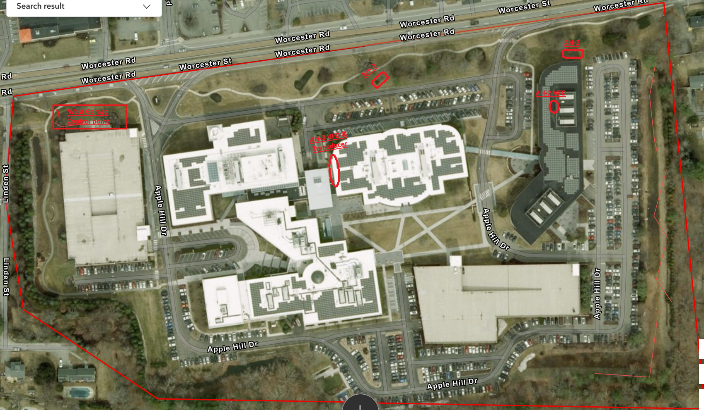
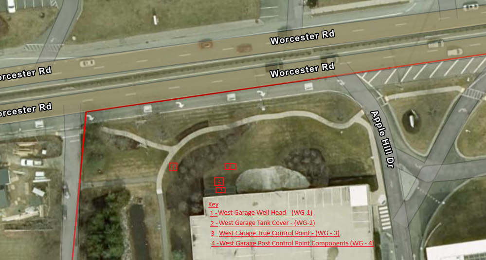

PROPERTY SYSTEMS / NATICK, MASSACHUSETTS
Follow the water.
A clearer view of the equipment,
the connections, and the landscape.
Review West Garage → · Review AH-2 wireframe → · Review AH-3 wireframe →

Selected water sourceLocations from your annotated aerial · Not surveyed
WEST GARAGE / LOCAL CONTEXT
Four stages. One water path.

WEST GARAGE / INTERACTIVE ASSEMBLY STUDY
See how it connects.
3D is unavailable on this device. Select a stage to explore its field photographs.
WEST GARAGE · WG
Water flow · schematic
Drag to rotate · Scroll to zoomFlow order: WG-1 → WG-2 → WG-3 → WG-4. WG-4: isolation valve → filter → winterization connection → flow meter.